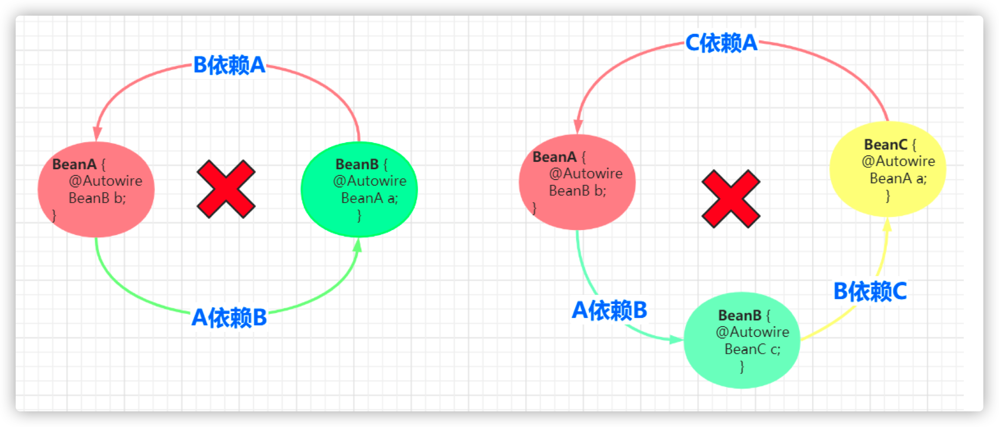
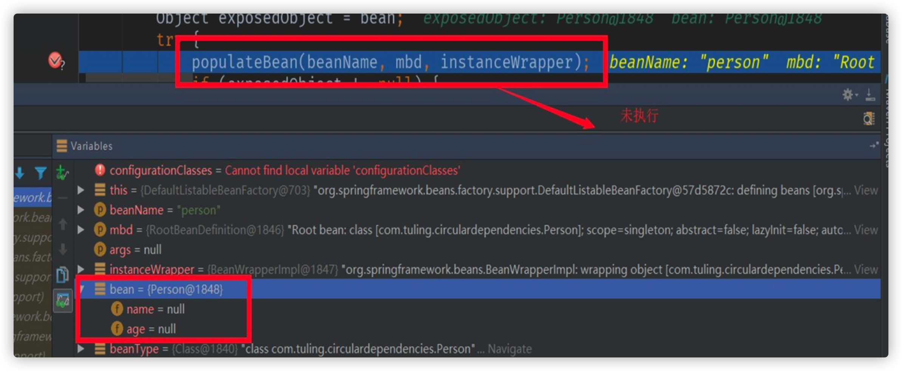
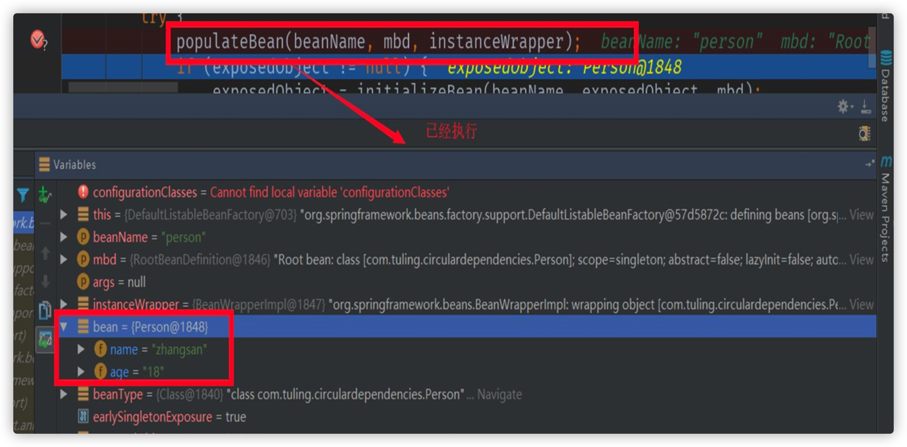
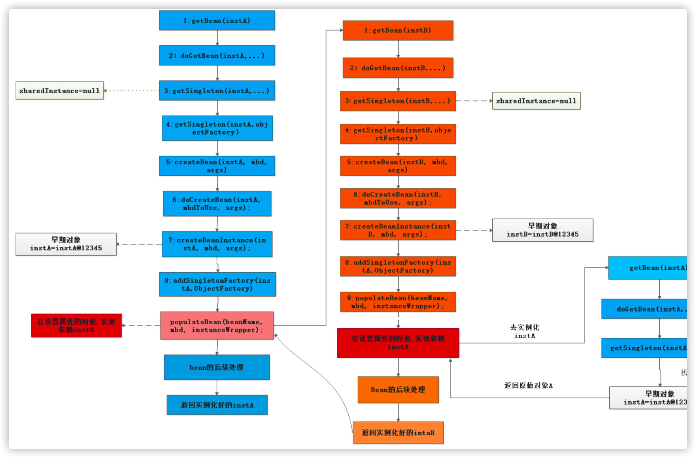
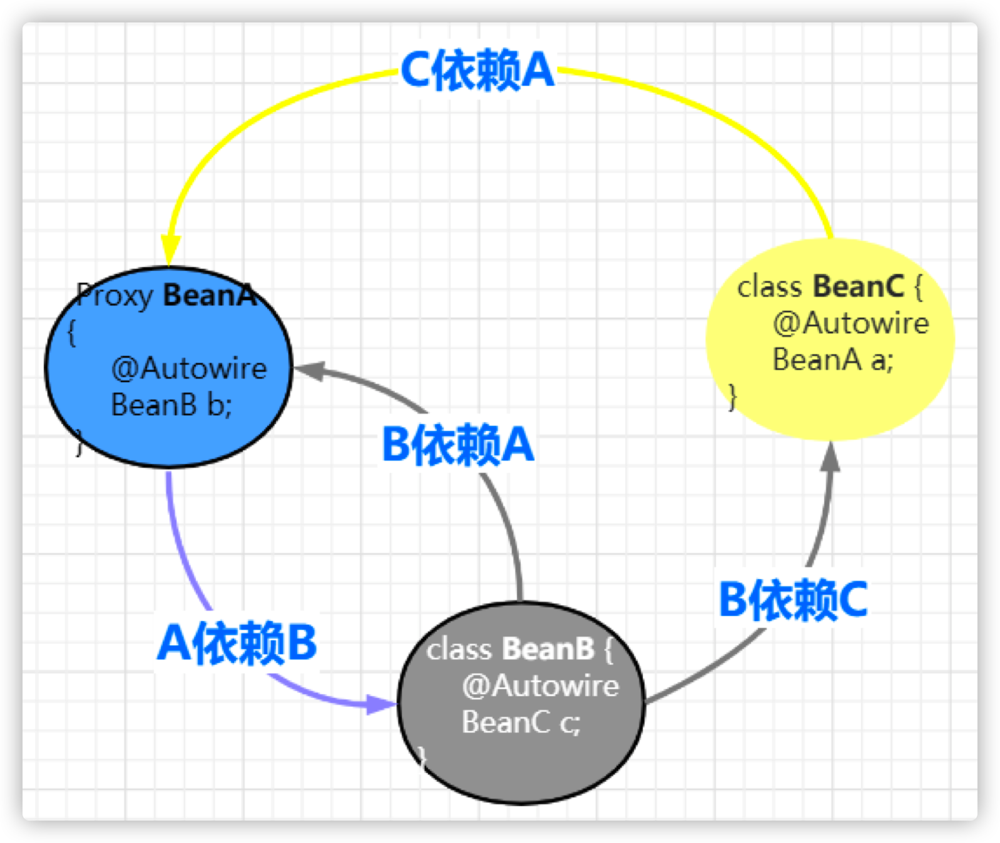

Spring如何解决循环依赖
1. 什么是循环依赖?
所谓的循环依赖是指，A 依赖 B，B 又依赖 A，它们之间形成了循环依赖。或者是 A 依赖 B，B 依赖 C，C 又依 赖 A。它们之间的依赖关系如下：

Demo:
public static void main(String[] args) throws Exception {
// 已经加载循环依赖
String beanName="com.tuling.circulardependencies.InstanceA";
getBean(beanName);
//ApplicationContext 已经加载spring容器
InstanceA a = (InstanceA) getBean(beanName);
a.say();
}
// 一级缓存 单例池 成熟态Bean
private static Map<String, Object> singletonObjects = new ConcurrentHashMap<>(256);
// 二级缓存 纯净态Bean (存储不完整的Bean用于解决循环依赖中多线程读取一级缓存的脏数据)
private static Map<String, Object> earlySingletonObjects = new ConcurrentHashMap<>(256);
// 三级缓存
private static Map<String, ObjectFactory> factoryEarlySingletonObjects = new ConcurrentHashMap<> (256);
// 标识当前是不是循环依赖 如果正在创建并且从一级缓存中没有拿到是不是说明是依赖
private static Set<String> singletonsCurrentlyInCreation = Collections.newSetFromMap(new ConcurrentHashMap<>(16));
/**
* 创建Bean
* @param beanName
* @return
*/
private static Object getBean(String beanName) throws Exception {
Class<?> beanClass = Class.forName(beanName);
Object bean=getSingleton(beanName);
if(bean!=null){
return bean;
}
// 开始创建Bean
singletonsCurrentlyInCreation.add(beanName);
// 1.实例化
Object beanInstanc = beanClass.newInstance();
ObjectFactory factory= () ‐> {
JdkProxyBeanPostProcessor beanPostProcessor=new JdkProxyBeanPostProcessor();
return beanPostProcessor.getEarlyBeanReference(bean,beanName);
};
factoryEarlySingletonObjects.put(beanName,factory);
// 只是循环依赖才创建动态代理？ //创建动态代理
// Spring 为了解决 aop下面循环依赖会在这个地方创建动态代理 Proxy.newProxyInstance
// Spring 是不会将aop的代码跟ioc写在一起
// 不能直接将Proxy存入二级缓存中
// 是不是所有的Bean都存在循环依赖 当存在循环依赖才去调用aop的后置处理器创建动态代理
// 存入二级缓存
// earlySingletonObjects.put(beanName,beanInstanc);
// 2.属性赋值 解析Autowired
// 拿到所有的属性名
Field[] declaredFields = beanClass.getDeclaredFields(); 72
// 循环所有属性
for (Field declaredField : declaredFields) {
// 从属性上拿到@Autowired
Autowired annotation = declaredField.getAnnotation(Autowired.class);
// 说明属性上面有@Autowired
if(annotation != null){
Class<?> type = declaredField.getType();
//com.tuling.circulardependencies.InstanceB
getBean(type.getName());
}
}
// 3.初始化 (省略）
// 创建动态代理
// 存入到一级缓存
singletonObjects.put(beanName,beanInstanc);
return beanInstanc;
}
private static Object getSingleton(String beanName){
Object bean = singletonObjects.get(beanName);
// 如果一级缓存没有拿到 是不是就说明当前是循环依赖创建
if(bean == null && singletonsCurrentlyInCreation.contains(beanName)){
// 调用bean的后置处理器创建动态代理
bean = earlySingletonObjects.get(beanName);
if(bean == null){
ObjectFactory factory = factoryEarlySingletonObjects.get(beanName);
factory.getObject();
}
}
return bean;
}
private static Object getEarlyBeanReference(String beanName, Object bean){
JdkProxyBeanPostProcessor beanPostProcessor=new JdkProxyBeanPostProcessor();
return beanPostProcessor.getEarlyBeanReference(bean,beanName);
}
2. 如何解决循环依赖？
三级缓存
DefaultSingletonBeanRegistry类的三个成员变量命名如下：
/** 一级缓存 这个就是我们大名鼎鼎的单例缓存池 用于保存我们所有的单实例bean */
private final Map<String, Object> singletonObjects = new ConcurrentHashMap<>(256);
/** 三级缓存 该map用户缓存 key为 beanName value 为ObjectFactory(包装为早期对象) */
private final Map<String, ObjectFactory<?>> singletonFactories = new HashMap<>(16);
/** 二级缓存 ，用户缓存我们的key为beanName value是我们的早期对象(对象属性还没有来得及进行赋值) */
private final Map<String, Object> earlySingletonObjects = new HashMap<>(16);
以 BeanA 和 BeanB 两个类相互依赖为例
2.1 创建原始 bean 对象
纯洁态Bean
instanceWrapper = createBeanInstance(beanName, mbd, args);
final Object bean = (instanceWrapper != null ? instanceWrapper.getWrappedInstance() : null);
假设 beanA 先被创建，创建后的原始对象为BeanA@1234，上面代码中的 bean 变量指向就是这个对象。
2.2 暴露早期引用
该方法用于把早期对象包装成一个ObjectFactory 暴露到三级缓存中 用于将解决循环依赖
protected void addSingletonFactory(String beanName, ObjectFactory<?> singletonFactory) {
...
//加入到三级缓存中，，，，，暴露早期对象用于解决循环依赖
this.singletonFactories.put(beanName, singletonFactory);
...
}
beanA 指向的原始对象创建好后，就开始把指向原始对象的引用通过 ObjectFactory 暴露出去。 getEarlyBeanReference 方法的第三个参数 bean 指向的正是 createBeanInstance 方法创建出原始 bean 对象 BeanA@1234。
2.3 解析依赖
populateBean(beanName, mbd, instanceWrapper);
还没有进行属性装配，自动注入的属性都是null

初始化好的Bean

populateBean 用于向 beanA 这个原始对象中填充属性，当它检测到 beanA 依赖于 beanB 时，会首先去实例化 beanB。 beanB 在此方法处也会解析自己的依赖，当它检测到 beanA 这个依赖，于是调用 BeanFactroy.getBean("beanA") 这个方法，从容 器中获取 beanA。
2.4 获取早期引用
protected Object getSingleton(String beanName, boolean allowEarlyReference) {
/**
* 第一步:我们尝试去一级缓存(单例缓存池中去获取对象,一般情况从该map中获取的对象是直接可以使用的)
* IOC容器初始化加载单实例bean的时候第一次进来的时候 该map中一般返回空
*/
Object singletonObject = this.singletonObjects.get(beanName);
/**
* 若在第一级缓存中没有获取到对象,并且singletonsCurrentlyInCreation这个list包含该beanName
* IOC容器初始化加载单实例bean的时候第一次进来的时候 该list中一般返回空,但是循环依赖的时候可以满足该条件
*/
if (singletonObject == null && isSingletonCurrentlyInCreation(beanName)) {
synchronized (this.singletonObjects) {
/**
* 尝试去二级缓存中获取对象(二级缓存中的对象是一个早期对象)
* 何为早期对象:就是bean刚刚调用了构造方法，还来不及给bean的属性进行赋值的对象(纯净态)
* 就是早期对象
*/
singletonObject = this.earlySingletonObjects.get(beanName);
/**
* 二级缓存中也没有获取到对象,allowEarlyReference为true(参数是有上一个方法传递进来的true)
*/
if (singletonObject == null && allowEarlyReference) {
/**
* 直接从三级缓存中获取 ObjectFactory对象 这个对接就是用来解决循环依赖的关键所在
* 在ioc后期的过程中,当bean调用了构造方法的时候,把早期对象包裹成一个ObjectFactory
* 暴露到三级缓存中
*/
ObjectFactory<?> singletonFactory = this.singletonFactories.get(beanName);
//从三级缓存中获取到对象不为空
if (singletonFactory != null) {
/**
* 在这里通过暴露的ObjectFactory 包装对象中,通过调用他的getObject()来获取我们的早期对象
* 在这个环节中会调用到 getEarlyBeanReference()来进行后置处理
*/
singletonObject = singletonFactory.getObject();
// 把早期对象放置在二级缓存,
this.earlySingletonObjects.put(beanName, singletonObject);
// ObjectFactory 包装对象从三级缓存中删除掉
this.singletonFactories.remove(beanName);
}
}
}
}
return singletonObject;
}
接着上面的步骤讲:
- populateBean 调用 BeanFactroy.getBean("beanA") 以获取 beanB 的依赖。
- getBean("beanB") 会先调用 getSingleton("beanA")，尝试从缓存中获取 beanA。此时由于 beanA 还没完全实例化好
- 于是 this.singletonObjects.get("beanA") 返回 null。
- 接着 this.earlySingletonObjects.get("beanA") 也返回空，因为 beanA 早期引用还没放入到这个缓存中。
- 最后调用 singletonFactory.getObject() 返回 singletonObject，此时 singletonObject != null。singletonObject 指向 BeanA@1234，也就是 createBeanInstance 创建的原始对象。此时 beanB 获取到了这个原始对象的引用，beanB 就能顺利完成实例 化。beanB 完成实例化后，beanA 就能获取到 beanB 所指向的实例，beanA 随之也完成了实例化工作。由于 beanB.beanA 和 beanA 指向的是同一个对象 BeanA@1234，所以 beanB 中的 beanA 此时也处于可用状态了。
以上的过程对应下面的流程图：

3. 为何需要三级缓存,而不是两级缓存?
为什么需要二级缓存？
二级缓存只要是为了分离成熟Bean和纯净Bean(未注入属性)的存放， 防止多线程中在Bean还未创建完成时读取到的Bean时不完整的。所 以也是为了保证我们getBean是完整最终的Bean，不会出现不完整的情况。
为什么需要三级缓存？
我们都知道Bean的aop动态代理创建时在初始化之后，但是循环依赖的Bean如果使用了AOP。 那无法等到解决完循环依赖再创建动态代 理， 因为这个时候已经注入属性。 所以如果循环依赖的Bean使用了aop. 需要提前创建aop。 但是需要思考的是动态代理在哪创建？？ 在实例化后直接创建？ 但是我们正常的Bean是在初始化创建啊。 所以可以加个判断如果是 循环依赖就实例化后调用，没有循环依赖就正常在初始化后调用。 怎么判断当前创建的bean是不是循环依赖？ 根据二级缓存判断？有就是循环依赖？ 那这个判断怎么加？加载实例化后面行吗？实例化后如下：
if(二级缓存有说明是循环依赖？){
二级缓存=创建动态代理覆盖（判断当前bean是否被二级缓存命中）；
}
这样写可以吗？ 肯定不行啊， 因为实例化后始终会放入二级缓存中。
所以这样写不管是不是循环依赖都会在实例化后创建动态代理。
创建本身的时候没法判断自己是不是循环依赖，， 只有在B 引用A （不同bean的引用直接）下才能判断是不是循环依赖（比如B引用A,A 正在创建，那说明是循环依赖）， 所以判断要卸载getSingleton中。
假如A是proxy.
A创建Bean ‐‐>注入属性B‐‐>getBean(B)‐‐>创建B‐‐>注入属性A‐‐‐‐>getSingleton("a")之后写如下代码
if(二级缓存有说明是循环依赖？){
// 在这里创建AOP代理吗？
二级缓存=创建动态代理覆盖（判断当前bean是否被二级缓存命中，没命中依然返回二级缓存）；
}
在这里创建行吗？行！那要三级缓存干吗？如果是这样的依赖呢？

A被循环依赖了俩次或N次， 那要创建N次aop吗然后在里面判断有没有命中? 什么？ 你说根据二级缓存的对象判断？ 如果是动态代 理就不重复创建？逻辑太复杂了。毫无扩展性也太过于耦合。。如果希望循环依赖给程序员扩展呢？那程序员不一定就返回proxy 。
假如A是proxy.
A创建Bean ‐‐>注入属性B‐‐>getBean(B)‐‐>创建B‐‐>注入属性A‐‐‐‐>getSingleton("a")之后写如下代码
if (二级缓存有说明是循环依赖？) {
if (二级缓存是aop就) {
return 二级缓存;
}
// 在这里创建AOP代理吗？
二级缓存=创建动态代理覆盖（判断当前bean是否被二级缓存命中，没命中依然返回二级缓存）；
}
除了这样没有更好的解决方案吗？ 能不能让二级缓存存储的bean无脑返回就行了（不管是普通的还是代理的，让这块逻辑分离？ 可 以。 增加三级缓存，二级缓存先啥也不存。
三级缓存 存一个函数接口， 动态代理还是普通bean的逻辑调用BeanPostProcessor 都放在这里面。 只要调用了就存在二级缓存，无 脑返回就行。 大大减少业务逻辑复杂度
为什么Spring不能解决构造器的循环依赖？
从流程图应该不难看出来，在Bean调用构造器实例化之前，一二三级缓存并没有Bean的任何相关信息，在
实例化之后才放入三级缓存中，因此当getBean的时候缓存并没有命中，这样就抛出了循环依赖的异常了。
为什么多例Bean不能解决循环依赖？
我们自己手写了解决循环依赖的代码，可以看到，核心是利用一个map，来解决这个问题的，这个map就相当于缓存。
为什么可以这么做，因为我们的bean是单例的，而且是字段注入（setter注入）的，单例意味着只需要创建一次对象，后面就可以从缓存中取出来，字段注入，意味着我们无需调用构造方法进行注入。
如果是原型bean，那么就意味着每次都要去创建对象，无法利用缓存；
如果是构造方法注入，那么就意味着需要调用构造方法注入，也无法利用缓存。
循环依赖可以关闭吗
可以，Spring提供了这个功能，我们需要这么写：
public class Main {
public static void main(String[] args) {
AnnotationConfigApplicationContext applicationContext =
new AnnotationConfigApplicationContext();
applicationContext.setAllowCircularReferences(false);
applicationContext.register(AppConfig.class);
applicationContext.refresh();
}
}
4. 如何进行拓展
bean可以通过实现SmartInstantiationAwareBeanPostProcessor接口（一般这个接口供spring内部使用）的 getEarlyBeanReference方法进行拓展
4.1 何时进行拓展？（进行bean的实例化时）
protected Object doCreateBean(final String beanName,
final RootBeanDefinition mbd,
final Object[] args) throws BeanCreationException {
//省略其他代码，只保留了关键代码
//...
// Eagerly cache singletons to be able to resolve circular references
// even when triggered by lifecycle interfaces like BeanFactoryAware.
boolean earlySingletonExposure = (mbd.isSingleton() &&
this.allowCircularReferences &&
isSingletonCurrentlyInCreation(beanName));
if (earlySingletonExposure) {
if (logger.isDebugEnabled()) {
logger.debug("Eagerly caching bean '" + beanName +
"' to allow for resolving potential circular references");
}
//将刚实例化好的bean添加到一级缓存中
addSingletonFactory(beanName, new ObjectFactory
@Override
public Object getObject() throws BeansException {
//执行拓展的后置处理器
return getEarlyBeanReference(beanName, mbd, bean);
}
}
}
4.2 getEarlyBeanReference方法
protected Object getEarlyBeanReference(String beanName,
RootBeanDefinition mbd,
Object bean) {
Object exposedObject = bean;
//判读我们容器中是否有InstantiationAwareBeanPostProcessors类型的后置处理器
if (!mbd.isSynthetic() && hasInstantiationAwareBeanPostProcessors()) {
//获取我们所有的后置处理器
for (BeanPostProcessor bp : getBeanPostProcessors()) {
//判断我们的后置处理器是不是实现了SmartInstantiationAwareBeanPostProcessor接口
if (bp instanceof SmartInstantiationAwareBeanPostProcessor) {
//进行强制转换
SmartInstantiationAwareBeanPostProcessor ibp =
(SmartInstantiationAwareBeanPostProcessor) bp;
//挨个调用SmartInstantiationAwareBeanPostProcessor的getEarlyBeanReference
exposedObject = ibp.getEarlyBeanReference(exposedObject, beanName);
}
}
}
return exposedObject;
}
扩展示例：
@Component
public class TulingBPP implements SmartInstantiationAwareBeanPostProcessor {
public Object getEarlyBeanReference(Object bean, String beanName) throws BeansException {
if(beanName.equals("instanceA") || beanName.equals("instanceB")) {
JdkDynimcProxy jdkDynimcProxy = new JdkDynimcProxy(bean);
return jdkDynimcProxy.getProxy();
}
return bean;
}
}